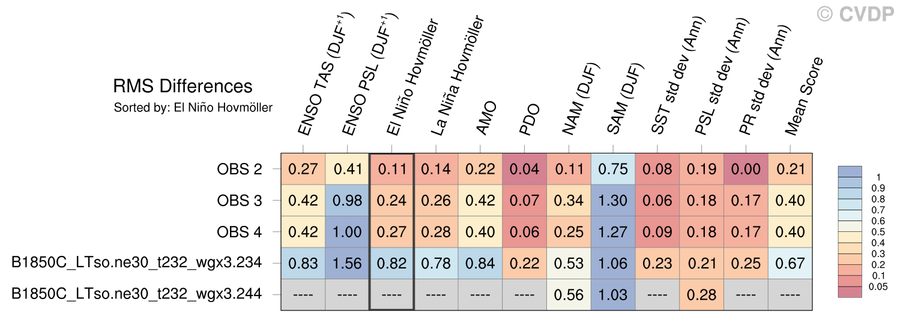

Go to: | Methodology and Definitions Diagnostics Plots Pattern Correlation Metric Tables |
ADF/CVDP Comparison |
RMS Metrics Tables
| Sort By: | Namelist (default) | Namelist (Alphabetically) | ENSO TAS | ENSO PSL | El Niño Hovmöller | La Niña Hovmöller | AMO | PDO | NAM | SAM | SST std dev | PSL std dev | PR std dev | Mean Score |

Created Mon 03 Nov 2025 02:22:23 PM MSTCVDP Version 5.2.0